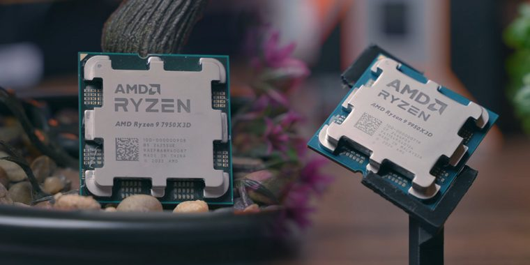
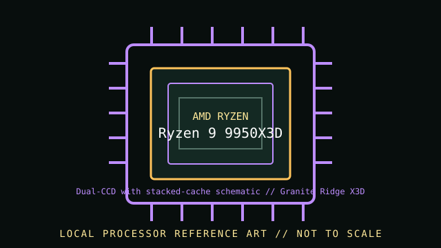

[ INDIVIDUAL CPU COMPONENT // ZEN 5 GRANITE RIDGE DESKTOP WITH 2ND-GENERATION 3D V-CACHE ]
AMD Ryzen 9 9950X3D
Zen 5 Granite Ridge desktop with 2nd-generation 3D V-Cache; 16 cores / 32 threads, 4.3 GHz base / up to 5.7 GHz max boost, 128 MB L3 cache, 170 W default TDP. Check exact motherboard firmware and system configuration before installation.


MODEL IDENTIFICATION: This record describes AMD Ryzen 9 9950X3D. Confirm the full model name and package markings; adjacent Ryzen model numbers and suffixes can have different silicon, graphics, cache, power and compatibility.
Verified model specifications
| Cataloged part | AMD Ryzen 9 9950X3D |
|---|---|
| Architecture / family | Zen 5 Granite Ridge desktop with 2nd-generation 3D V-Cache |
| Core / thread count | 16 cores / 32 threads |
| Frequency | 4.3 GHz base / up to 5.7 GHz max boost |
| Cache | 16 MB L2 / 128 MB L3 |
| Default TDP | 170 W |
| Socket / memory | AM5 / Dual-channel DDR5 |
| Expansion / graphics | PCIe 5.0; Integrated AMD Radeon Graphics (2 graphics cores); discrete graphics optional. |
| Model distinction | The X3D 3D V-Cache model is distinct from Ryzen 9 9950X. Use model-specific BIOS, performance-tuning, power and thermal guidance; do not infer settings from the non-X3D SKU. |
Compatibility and service notes
- Requires AM5, DDR5 memory, and BIOS support for this exact Ryzen 9000 X3D SKU. Confirm the motherboard vendor CPU list and firmware before installation; plan cooling for a 170 W desktop processor. Built-in Radeon graphics are present.
- The X3D 3D V-Cache model is distinct from Ryzen 9 9950X. Use model-specific BIOS, performance-tuning, power and thermal guidance; do not infer settings from the non-X3D SKU.
- Package and heatsink dimensions are not represented by this schematic. Confirm the exact board socket, cooler retention/mount, system power delivery and thermal solution in their manuals.
- Record the motherboard model, BIOS/AGESA version, installed memory, cooler, and exact CPU OPN/markings when documenting a working build.
Sources & further reading
- AMD — AMD Ryzen 9 9950X3D product specificationsManufacturer model page; source for frequency, core/thread count, cache, socket, memory, graphics and default TDP.
- AMD — Processor specifications catalogManufacturer processor specifications index; select the exact full product name when checking model data.
- AMD — Support and documentationOfficial support resources; verify motherboard-level CPU compatibility and BIOS requirements with the motherboard vendor's CPU support list.
Published boost frequency is a maximum, not a guaranteed sustained all-core clock. Motherboard firmware, cooling, memory configuration and workload affect system behavior.